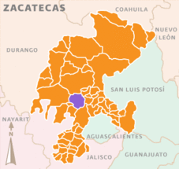
Jerez de García Salinas es la cabecera municipal del municipio de Jerez en el estado mexicano de
Zacatecas.
Se encuentra ubicado en el centro del estado, a 56 km al sudoeste de la ciudad de Zacatecas.
Es una ciudad del estado con importancia turística y cultural.
Jerez siempre se ha caracterizado por la hermosura de sus fincas y recientemente ha sido incluida en
el programa Pueblos mágicos, por parte de la Secretaría de Turismo, por sus tradiciones, costumbres,
leyendas y arquitectura.
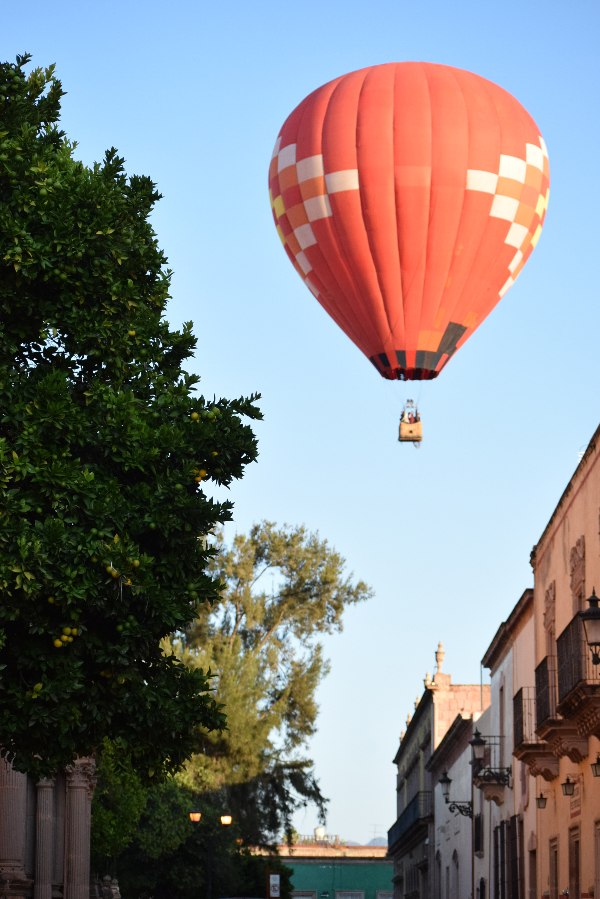
Esta apacible población donde se saborea el ambiente provinciano, es conocida por ser la cuna
del poeta Ramón López Velarde, y se convirtió en el primer “Pueblo Mágico” de Zacatecas. Con
este estatus, desde el año 2007 Jerez se promueve como destino turístico nacional e
internacional.
De calles alegres por la música de la tambora y el repicar de las campanas, en Jerez de García
Salinas siempre hay fiesta.
Sus edificios neoclásicos son testigos de las historias que se han tejido desde su fundación.
Este destino de clima seco y templado es ideal para el viajero que busca relajarse en un
desenfadado ambiente provinciano de vivas tradiciones, magníficas artesanías y encanto natural
Jerez, como pueblo colonial, tiene demasiados atractivos turisticos arquitectonicos que son
sitios de interes para el turista, desde estilo barroco en sus construcciones, hasta el estilo
gotico en algunos edificios emblematicos del municipio:
Santuario de la Virgen de la Soledad
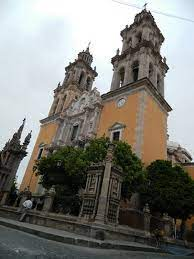
Construido sobre lo que fuera la capilla del hospital del barrio de San Miguel, para 1648 se fundó
una cofradía y hospital nombrada de la Concepción. Para 1682 la cofradía ya contaba con una pequeña
capilla y en 1693 se edificó una capilla de mayores dimensiones, con forma de cruz griega y fue
dedicada a la Virgen del Rosario.
1700
Se coloca la imagen de la Virgen de la Soledad en el crucero sur, al pasar el tiempo la capilla no
fue suficiente y se prefirió la construcción de un templo mayor construido durante el siglo XIX,
sobre los cimientos de lo que fuera la capilla de los indígenas, su construcción comienza el 17 de
abril de 1805, siendo el maestro de obra José María Vázquez.
1818
Fue dedicado a la Nuestra Señora de la Soledad, la cual ha sido símbolo de veneración y unión
del Pueblo Jerezano. Se dice que está inspirado en la catedral de Santiago Compostela.
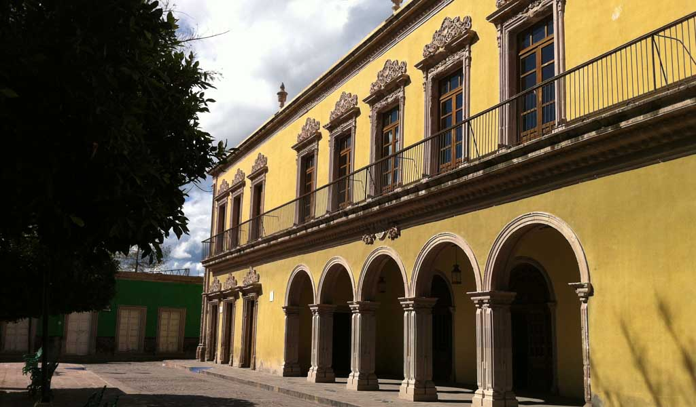
Construido de 1871 a 1880, es uno de los edificios más representativos del Pueblo Mágico y uno de
los mejores conservados del estado.
Teatro de estilo isabelino con una capacidad de 469 personas sentadas, conserva la inclinación del
escenario y así como también la acústica que caracteriza a los teatros de la época.
Antes de ser terminado ya era utilizado, las personas llevaban cada quien su propia silla para
disfrutar de las funciones que eran presentadas y que por tradición aún se realizan.
Sirvió como ring de box, cuartel militar, salón de baile y sala de cine.
Su nombre se le debe al Jefe político Don José María Hinojosa quien le dio el mayor impulso para su
terminación.
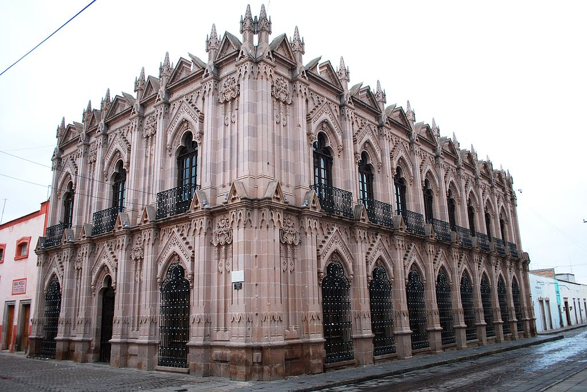
Pantaleón de la Torre y Salcedo dono un terreno para la construcción de una escuela de primera
letras en su natal Jerez
Otros patrocinadores fueron: su hermano, José Isidro Abundio, Florencio Menchaca, Ignacio Vázquez y
Antonio Borrego. Pantaleón falleció en 1799. La independencia mermó a los descendientes de Pantaleón
y la escuela no contó con su principal apoyo, después pasó a ser del municipio.
1874 se cierra la única escuela pública que había en el municipio por falta de fondos.
Llega a la jefatura política Don Pedro Cabrera Calderón en 1881 teniendo en mente tratar de reabrir
la escuela aunque sus verdaderas intenciones era destruirla y construir una nueva, para ese entonces
había 106 niños inscritos que tomaban clases en el piso destruido soportando las corrientes de aire
que se hacían por las ventanas sin vidrios.
1887 siendo jefe político Rafael Páez intenta de implementar escuela mixta pero las instalaciones de
la vieja escuela presentaban un peligro para los niños ya que estaba casi en ruinas, los pizarrones
estaban rotos, se contaban con nueve bancas para 149 niños.
1894 vuelve a ser jefe político Don Pedro Cabrera Calderón y terminando la feria de primavera de ese
año manda derribar la escuela y el 17 de junio de ese mismo año el Gobernador constitucional del
Estado, El General Jesus Peña Arechiga coloca la primera piedra de la nueva escuela.
5 de diciembre de 1895 se termina los trabajos de cantarería.
5 de mayo de1896 se terminan los trabajos de carpintería.
9 de agosto de 1896 se hace la tan esperada inauguración con la presencia del Gobernador del Estado
General Jesús Peña Arechiga y el jefe político Don Pedro Cabrera.
Se hizo un baile para los invitados en el patio de dicho edificio y en el teatro para el pueblo.
Atenognes Cabrera diseño el plano para la construcción de la nueva escuela y el canterero empírico
Dámaso Muñetón fue el encargado de hacer toda la mano de obra en cantera rosada nativa de aquí
mismo.
Parroquia de la Inmaculada Concepcion
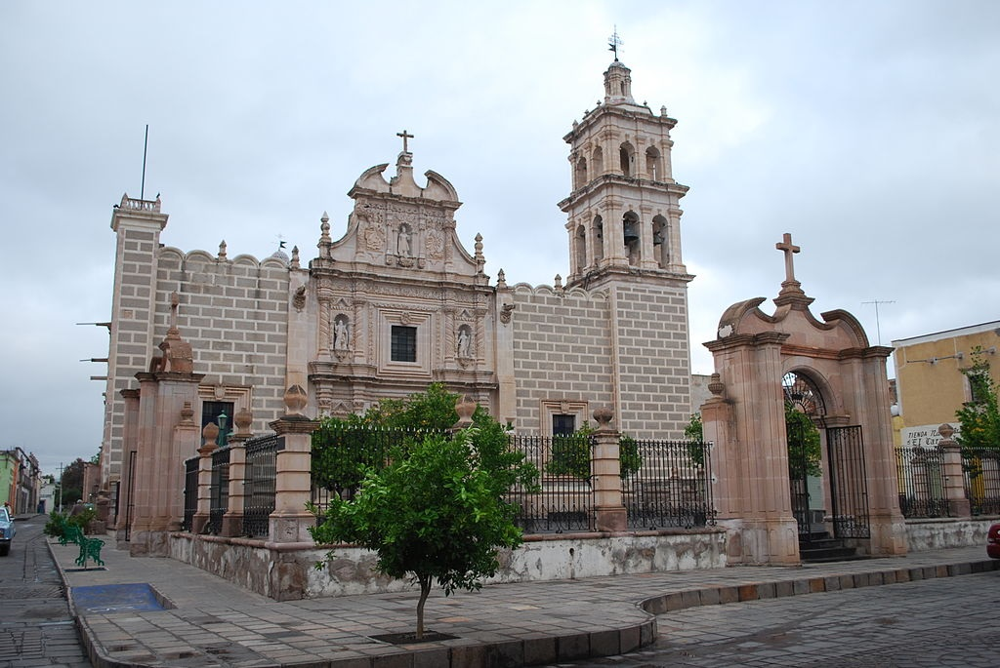
Se comienza a construir en el año de 1728 y se termina en 1754 su construcción está conformada por
tres naves y una fachada barroca de tres cuerpos en la cual se ubican los cuatro evangelistas y en
su remate se observa a Santo Domingo de Guzmán, ya que durante muchos años fue considerado el Santo
Patrón de la Antigua Villa de Xerez.
Por dentro encontraremos varios murales de buena calidad, como el descendimiento de la cruz, la
Asunción de María, el bautismo de Jesús entre otros.
Fue consagrada en 1954 doscientos años después de su terminación, en sus muros como en el piso se
encuentran sepultadas personas de abolengo que llegaron a vivir en esta ciudad, ya que era la
costumbre de sepultar a las familias en las iglesias según su posición económica.
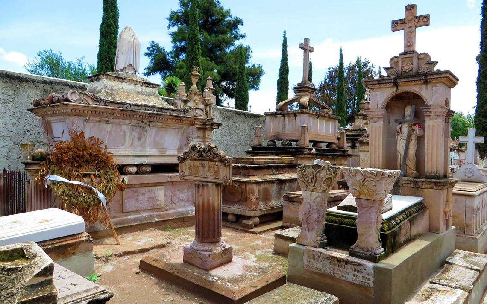
Considerado uno de los primeros panteones extramuros de México de la primera mitad del siglo XIX.
Dividido por clases sociales, predominando la clase alta con grandes mausoleos de familias
importantes que dominaban el territorio económicamente.
1813 ya se comenzaron a sepultar de manera general los cuerpos.
1752 era costumbre sepultar o engavetar a los cuerpos según su clase social, en todas las iglesias
había en sus atrios un cementerio.
Los asistentes a los actos litúrgicos tenían que soportar los fétidos olores de los cuerpos en
descomposición, en tiempo de calor los olores era más fuertes a tal grado que los files asistentes
se desmayaban y dejaron de asistir a los actos litúrgicos.
20 de mayo de 1799 en su visita pastoral a Jerez el Sr. Obispo Don Juan Cruz Ruiz de Cabañas y
Crespo el ayuntamiento y el cura bachiller Juan de Dios, le hicieron los inconvenientes y así mismo
les cediera el permiso para la construcción de un campo santo en el barrio del rescoldillo.
27 de noviembre de 1809 se sepultó la primera persona.
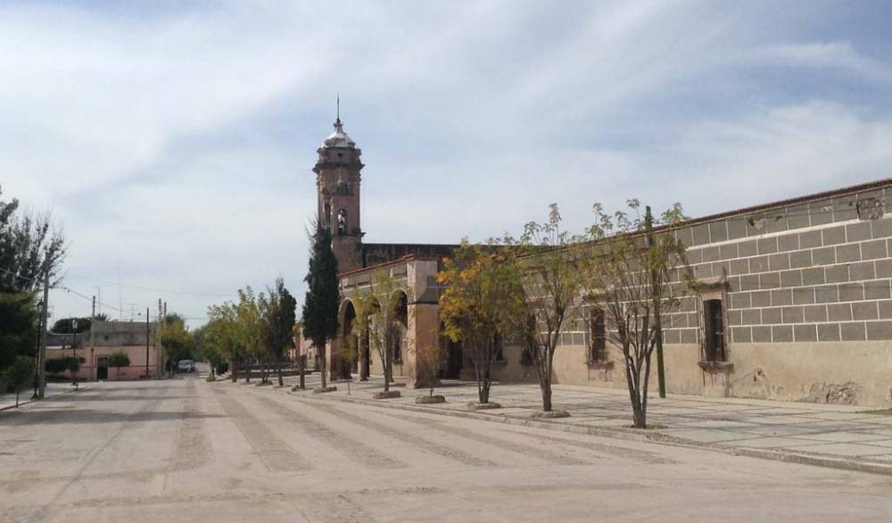
En un principio fue propiedad de Pedro Caldera, padre que fue de Miguel Caldera, por lo que dio en
llamársele “Los Ojos de Agua Caldera” o “La Ciénega de Caldera”. Siendo propiedad en el siglo XIX,
primero de las Hermanas Clarisas y después del licenciado Antonio María de Gordoa y Loaysa, la llamó
Ciénega de Dolores, a él se debe en parte la edificación de la Capilla a Nuestra Señora de los
Dolores. A mediados del siglo XX los descendientes de este señor venden la propiedad al señor Cura
don Carlos Uriel Argüelles Aldana, y en la actualidad la casa grande, la huerta y otros son
propiedad de don Rafael Argüelles Robles.
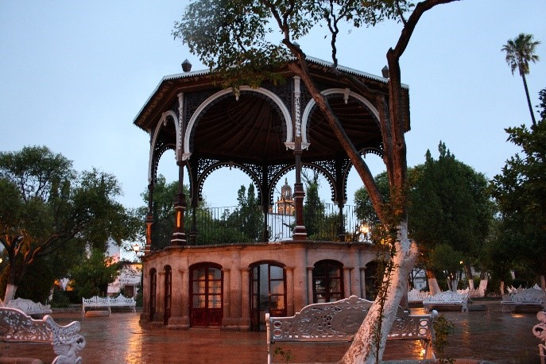
Este espacio fue utilizado por los frailes para evangelizar a los chichimecas.
En este lugar se encontraban el cepo y el garrote para castigar a los maleantes
1887 fue el año en el que el jefe político Don Rafael Páez comenzó los preparativos para la creación
de un jardín en lo que fueran la Plaza principal, a algunos les causó molestia ya que el mercado que
ahí se encontraba seria cambiado hacia la Plaza Tacuba restándole hermosura a las fachadas de las
casas de alrededor con los burdos quita soles.
Cuenta con un kiosco en forma de octágono de 48 columnas de cantera que forman el zócalo, así mismo
cuenta con un pabellón de tosca sillería, madera, fierra y zinc.
El 16 de septiembre de 1922 se decidió llamarle “jardín Rafael Páez” en honor a quien lo comenzara a
construir.
Se colocaran 4 fuentes de bronce para conmemorar el centenario de la independencia de México, las
cuales fueron hechas en la ciudad de Nueva york por un artista de apellido Fiske, de las cuales la
más sobre saliente es la de la primavera que representa una alegoría a la ya mencionada estación del
año.
Casa Museo Interactivo Ramon Lopez Velarde
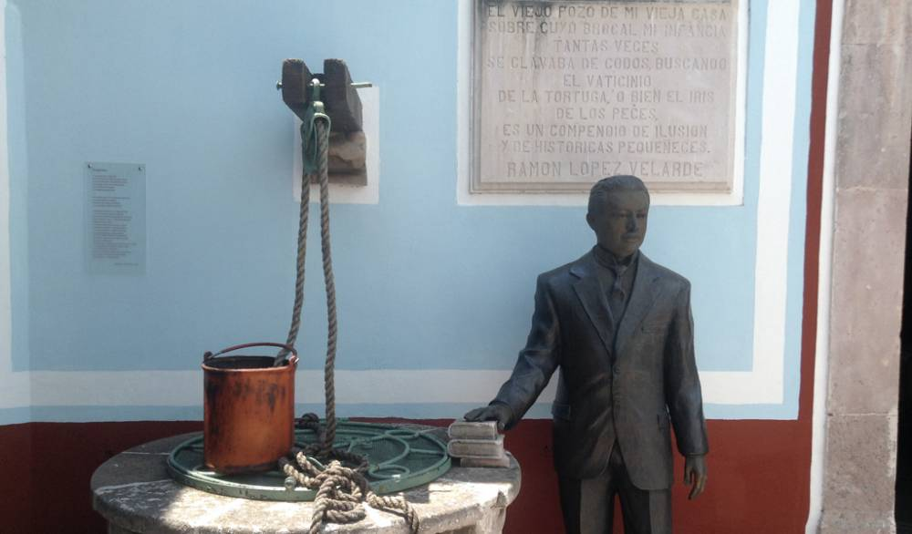
Típica casa jerezana, donde naciera el gran poeta Ramón López Velarde autor de la “Suave Patria”,
poema que consta de 33 estrofas y escribe un poema que tiene ese título, treinta y tres. La casa
está ambientada con muebles y decoración de la época en que estuvo habitado por el bardo y en ella
se pueden apreciar manuscritos y objetos personales de este gran poeta. Originalmente formó parte de
la Casa de El Banco, propiedad de la familia Cabrera, cuya descendencia pasó a posesión de don
Carlos Acevedo, quien la vende al Honorable Ayuntamiento de Jerez, que presidía el profesor Toribio
Peralta Gómez, el 7 de abril de 1951 y el 16 de septiembre de ese mismo año se proyectó convertirla
en museo.
Hoy es museo interactivo, donde al entrar es como transportarse al siglo XIX, ya que muestra algunos
muebles originales, así como objetos personales del insigne personaje: fotografías familiares,
copias de los manuscritos de suave patria, considerada como su obra maestra por muchos, y que fuera
compuesta en 1921 con motivo del primer centenario de la consumación de la independencia.
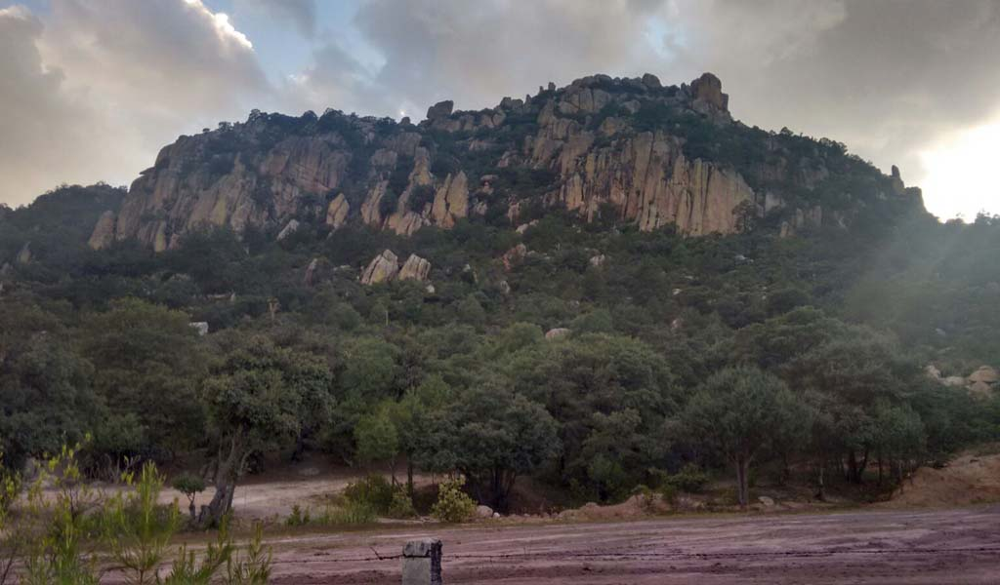
Se ubica a 20 km. Al poniente de la ciudad de jerez, con acceso pavimentado en su totalidad.
Es una majestuosa formación rocosa, cuyo espectáculo es un agasajo para los sentidos. Forma parte de
uno de los extremos de la sierra madre occidental y ofrece maravillosos paisajes de vegetación
boscosa y la grandiosidad de caprichosas formaciones rocosas, ideales para actividades alternativas
y eco turísticas.
Cuenta con 7 cabañas acondicionadas con todos los servicios.
Jerez, cuenta también con turismo de aventura enmarcado en uno de los más bellos paisajes, la sierra
de cardos.